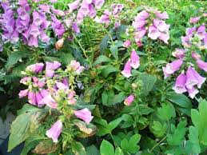
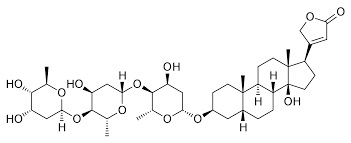

Nel 2004, giacente su un lato della chiesa di Santa Maria Antica alle Arche scaligere di Verona, fu aperto il sarcofago di Cangrande della Scala e riesumato il corpo di quello che fu il signore di quella splendida città fino al 22 luglio 1329, data della sua morte.
 Le analisi effettuate sulla mummia ben conservata sciolsero un dubbio che permaneva da tempo, ovvero se lo Scaligero fosse morto accidentalmente per quella famosa congestione di acqua fredda dopo una cavalcata sotto il sole cocente o se invece fosse stato avvelenato.
Le analisi effettuate sulla mummia ben conservata sciolsero un dubbio che permaneva da tempo, ovvero se lo Scaligero fosse morto accidentalmente per quella famosa congestione di acqua fredda dopo una cavalcata sotto il sole cocente o se invece fosse stato avvelenato.
Dagli esami effettuati, si trovarono nelle sue viscere (potenza infinita della chimica analitica moderna!) quantità significative di alcaloidi della digitale... e la digitale non è propriamente una pianta con cui fare una fresca misticanza da portare in tavola come insalatina estiva.
Quando in giugno mi sono imbattuto in un bell'assortimento di pianticelle purpuree, non ho potuto fare a meno di fotografarle.

Eccola la digitale (Digitalis purpurea), bella e insidiosa, piena di cardiotossici alcaloidi quali i glicosidi digitossina e la digossina, che nelle foglie raggiungono una percentuale non indifferente.
Non ho invece mai visto (nè credo che mai la vedrò, a meno di non fare un saltino nel posto giusto in Ungheria) la Digitalis lanata, ancora più ricca in alcaloidi e ovviamente ancora più tossica.
La foto, fatta affrettatamente, non rende giustizia dell'eleganza delle pudiche campanelle fucsia, belle e velenose come la mela di Biancaneve.
I suoi alcaloidi, talvolta ancora usati (in dosi microscopiche) nelle emergenze dell'insufficienza cardiaca, possiedono una tossicità estremamente elevata, tant'è che la digitale era una delle piante di elezione per gli avvelenamenti medioevali.

Il glicoside Digitossina
Magari il povero Cangrande (forse divenuto per qualcuno troppo "grande"...) ne sa qualcosa riguardo il suo mal di pancia fulminante in quel di Treviso.
Al giorno d'oggi gli avvelenamenti non si usano più nemmeno nei romanzi gialli più fantasiosi, ma nei secoli scorsi, mancando qualsiasi metodo di analisi, una volta che la vittima era passata a miglior vita chi poteva dire qualcosa di sicuro sulle cause della morte?
"Fluxus ventris" sentenziava per esempio il medicastro di turno tra un salasso e l'altro, e tanti saluti alla buon'anima... e agli eredi il resto.
Una persona di mia conoscenza, che ha delle belle piante di digitale in giardino e non ne conosceva la velenosità, ora le vuole estirpare, con mio grande disappunto:
-Ma le devi mangiare?- le ho detto.
-No - ha risposto, - ma ho paura lo stesso, ora che mi hai detto che sono velenose-
E ho dovuto ripetere, per la mille e millesima volta, il principio infallibile e universale valido dai tempi di Paracelso:
- ciò che fa di una qualsiasi sostanza un veleno non è la sua natura, ma la quantità che se ne ingerisce.
E la quantità ingerita godendosi con gli occhi le proprie pianticelle in giardino è esattamente pari a zero.
Da qui il mio disappunto.
Spero che se le estirpa, me le regali.
Non morirò certo guardandole.